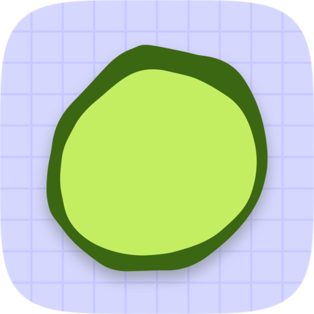

<!doctype html>
<!--
  The store capsules and library assets Steamworks asks for (Store Page
  Admin > Graphical Assets, and its Library Assets), in the site's own look:
  the lime mark and the Verdana wordmark of its toolbar, on its ground and
  14px grid (html in static/style.css, colours from static/ds.css), with
  drawings by @eyecntct on oeee.cafe laid over it as sheets of paper (art/).
  The library hero carries no logo (Steam lays the library logo over it), and
  the library logo is the logo alone on nothing.

    ./steam/capsules/render.sh
-->
<meta charset="utf-8" />
<style>
  :root {
    --ground: #ccccff;
    --grid: #bbbbff;
    --ink: #22223a;
    --frame: #666699;
  }
  html, body { margin: 0; background: var(--ground); overflow: hidden; }
  .stage {
    position: relative;
    overflow: hidden;
    background-color: var(--ground);
    background-image: linear-gradient(var(--grid) 1px, transparent 1px),
      linear-gradient(90deg, var(--grid) 1px, transparent 1px);
    background-size: var(--cell) var(--cell);
    font-family: Verdana, Tahoma, "Lucida Grande", sans-serif;
  }
  .logo {
    position: absolute;
    display: flex;
    align-items: center;
    gap: var(--gap);
    color: var(--ink);
    font-weight: 700;
    font-size: var(--word-size);
    letter-spacing: -0.02em;
    white-space: nowrap;
    line-height: 1;
  }
  .logo.stack { flex-direction: column; }
  .logo img { width: var(--mark); height: var(--mark); }
  /* The logo alone, for Steam to lay over the hero: a light halo keeps the
     ink legible on darker art. */
  html.bare, html.bare body, html.bare .stage { background: transparent; }
  html.bare .logo span { filter: drop-shadow(0 0 10px rgba(255, 255, 255, 0.9)); }
  .sheet {
    position: absolute;
    background: #fff;
    padding: var(--pad);
    border: 1px solid var(--frame);
    border-radius: 6px;
    box-shadow: 0 10px 24px rgba(34, 34, 90, 0.28);
  }
  .sheet img { display: block; width: 100%; height: 100%; object-fit: cover; }
  /* Drawn up past twice their size, oekaki keep their pixels. */
  .sheet img.big { image-rendering: pixelated; }
</style>
<body>
<div id="stage" class="stage"></div>
<script>
  const layouts = {
    // 920 by 430: the logo leading on the left, drawings fanned to the right.
    header: {
      w: 920, h: 430, cell: 14,
      logo: { left: 48, top: 160, mark: 108, word: 70, gap: 22 },
      sheets: [
        ['chicken', 640, 22, 158, -7],
        ['nap', 770, 120, 170, 6],
        ['puppy', 628, 240, 160, 4],
      ],
    },
    // 462 by 174: the logo and nothing else, nearly filling it.
    small: {
      w: 462, h: 174, cell: 14,
      logo: { center: true, mark: 92, word: 58, gap: 16 },
      sheets: [],
    },
    // 1232 by 706: the logo centred, drawings all around it.
    main: {
      w: 1232, h: 706, cell: 14,
      logo: { center: true, dy: -6, mark: 150, word: 104, gap: 32 },
      sheets: [
        ['nap', 60, 46, 220, -8],
        ['fluff', 340, -44, 170, 6],
        ['chicken', 970, 30, 210, 7],
        ['spotlight', 60, 440, 210, 6],
        ['puppy', 960, 440, 220, -6],
        ['bear', 740, 556, 160, -9],
      ],
    },
    // 748 by 896: the logo across the middle, drawings above and below it.
    vertical: {
      w: 748, h: 896, cell: 14,
      logo: { center: true, mark: 112, word: 76, gap: 24 },
      sheets: [
        ['fluff', 290, -60, 180, 5],
        ['nap', 34, 46, 240, -7],
        ['chicken', 470, 40, 240, 6],
        ['bear', 290, 750, 180, -7],
        ['puppy', 40, 590, 240, 6],
        ['spotlight', 466, 600, 250, -6],
      ],
    },
    // Library capsule, 600 by 900: the mark over the wordmark in the middle,
    // drawings above and below.
    library: {
      w: 600, h: 900, cell: 14,
      logo: { center: true, stack: true, mark: 150, word: 84, gap: 18 },
      sheets: [
        ['fluff', 215, -70, 170, 4],
        ['nap', 22, 26, 250, -7],
        ['chicken', 326, 34, 250, 6],
        ['puppy', 30, 628, 240, 6],
        ['spotlight', 320, 620, 250, -6],
        ['bear', 205, 790, 170, -8],
      ],
    },
    // Library hero, 3840 by 1240, with no logo: drawings to either side and
    // the middle (Steam's 860 by 380 safe area, doubled) left for the logo.
    hero: {
      w: 3840, h: 1240, cell: 28, bare: false,
      logo: null,
      sheets: [
        ['nap', 90, 120, 540, -7],
        ['bear', 60, 760, 420, -9],
        ['spotlight', 620, 500, 540, 6],
        ['chicken', 2700, 100, 520, 7],
        ['fluff', 2720, 760, 400, -5],
        ['puppy', 3250, 400, 540, -6],
      ],
    },
    // Library logo: the logo alone on a transparent ground, 1280 wide.
    logo: {
      w: 1280, h: 280, cell: 14, bare: true,
      logo: { center: true, mark: 230, word: 156, gap: 46 },
      sheets: [],
    },
  };

  const which = new URLSearchParams(location.search).get('capsule') || 'header';
  const L = layouts[which];
  if (L.bare) document.documentElement.classList.add('bare');
  const stage = document.getElementById('stage');
  stage.style.width = L.w + 'px';
  stage.style.height = L.h + 'px';
  stage.style.setProperty('--cell', L.cell + 'px');

  for (const [name, x, y, size, turn] of L.sheets) {
    const el = document.createElement('div');
    el.className = 'sheet';
    const pad = Math.round(size * 0.04);
    Object.assign(el.style, {
      left: x + 'px', top: y + 'px', width: size - 2 * pad + 'px', height: size - 2 * pad + 'px',
      transform: `rotate(${turn}deg)`,
    });
    el.style.setProperty('--pad', pad + 'px');
    el.innerHTML = ``;
    const img = el.querySelector('img');
    img.onload = () => { if (size > img.naturalWidth * 2) img.classList.add('big'); };
    stage.append(el);
  }

  if (L.logo) {
    const logo = document.createElement('div');
    logo.className = L.logo.stack ? 'logo stack' : 'logo';
    logo.innerHTML = `<span>Oeee Cafe</span>`;
    logo.style.setProperty('--mark', L.logo.mark + 'px');
    logo.style.setProperty('--word-size', L.logo.word + 'px');
    logo.style.setProperty('--gap', L.logo.gap + 'px');
    stage.append(logo);
    if (L.logo.center) {
      logo.style.left = (L.w - logo.offsetWidth) / 2 + 'px';
      logo.style.top = (L.h - logo.offsetHeight) / 2 + (L.logo.dy || 0) + 'px';
    } else {
      logo.style.left = L.logo.left + 'px';
      logo.style.top = L.logo.top + 'px';
    }
  }
</script>
</body>
